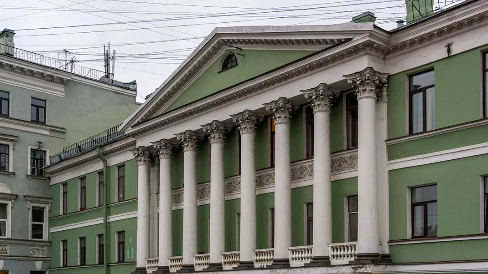
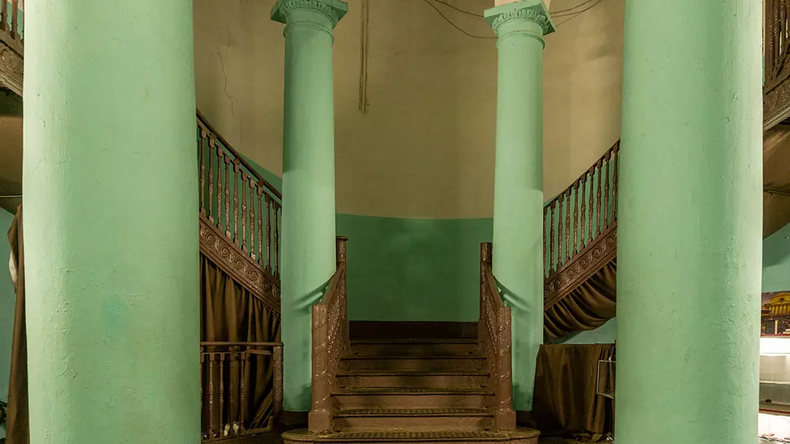
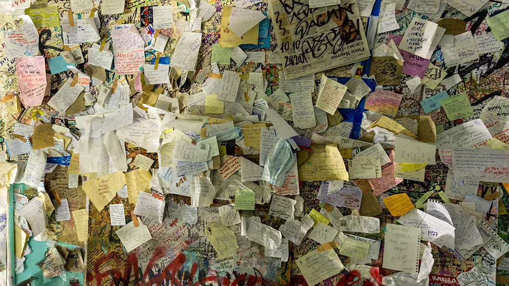
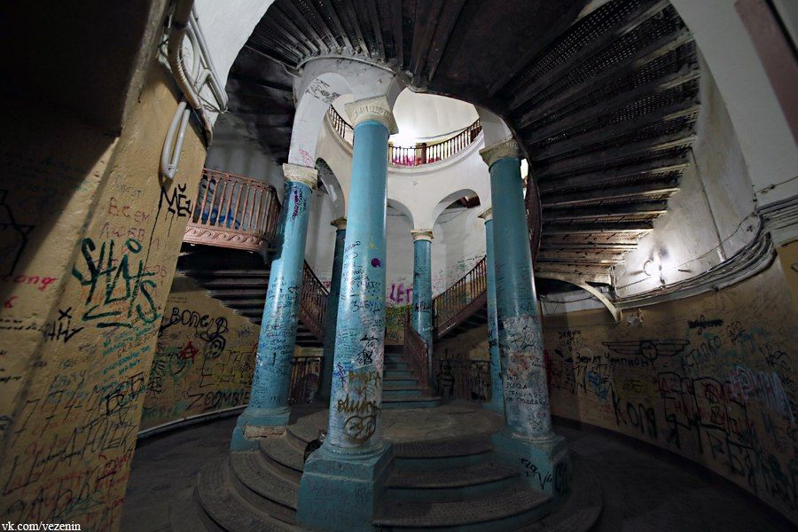

Ротонда в Доме на Гороховой

Легенда
Здание считается одним из самых мистических мест города. Говорят, что в XVIII–XIX веках здесь проходили тайные собрания масонов, а сама Ротонда служила местом инициации.

Существует миф о «лестнице в никуда»: якобы если подниматься по ней с закрытыми глазами, можно попасть в параллельное измерение. Другая легенда гласит, что в подвале дома находится портал, и человек, зашедший туда, может выйти постаревшим на несколько десятков лет.

Также рассказывают о «невидимом жильце» или духе Распутина (который жил неподалеку), чей силуэт иногда видят на стенах.
Что было на самом деле
Это обычный жилой дом, известный как дом купца Устинова. Ротонда (круглая постройка с колоннами внутри углового подъезда) была возведена в 1827 году архитектором А. И. Мельниковым. С архитектурной точки зрения это редкий для Петербурга образец «здания в здании» — внутри обычного фасада спрятана трехъярусная классическая ротонда с куполом.

В 1970–80-е годы место стало культовым для ленинградского рок-андеграунда; здесь бывали Виктор Цой и Константин Кинчев. Масонский след документально не подтвержден, хотя планировка здания действительно напоминает символику ордена.
← Назад к карте